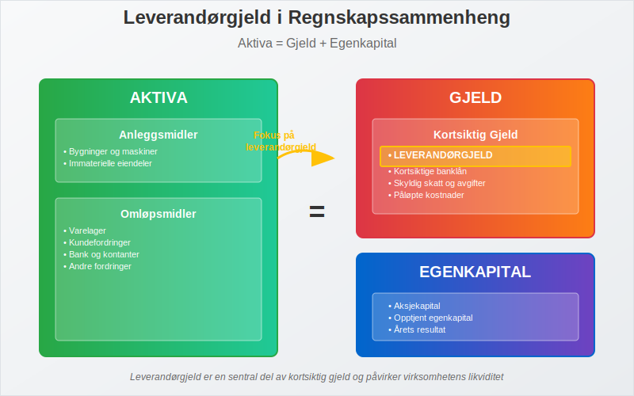
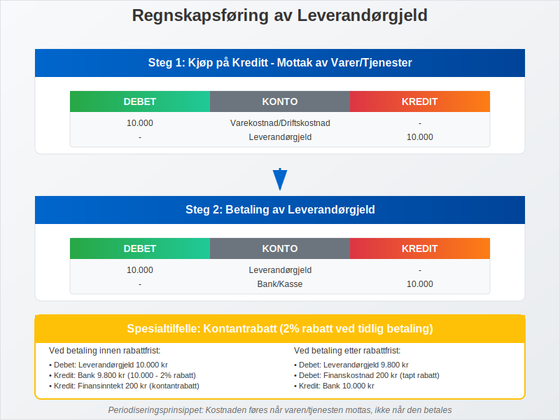
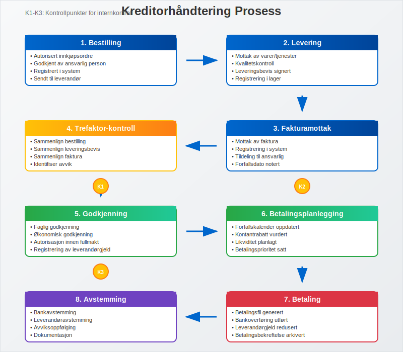

Leverandørgjeld er en av de mest sentrale komponentene i kortsiktig gjeld og representerer virksomhetens forpliktelser overfor leverandører av varer og tjenester. Som en kritisk del av balansen, påvirker leverandørgjeld både virksomhetens likviditet og leverandørforhold. Denne artikkelen gir en omfattende gjennomgang av leverandørgjeld, regnskapsføring, håndtering og optimalisering.
Seksjon 1: Grunnleggende om Leverandørgjeld
Leverandørgjeld defineres som virksomhetens forpliktelser overfor leverandører for varer og tjenester som er mottatt, men ennå ikke betalt. Dette er en naturlig del av normal forretningsdrift og oppstår når virksomheten kjøper på kreditt i stedet for å betale kontant ved levering. For handelsbedrifter oppstår leverandørgjeld primært gjennom varekjøp som skal selges videre til kunder.

1.1 Kjennetegn ved Leverandørgjeld
Leverandørgjeld har følgende karakteristiske egenskaper:
- Kortsiktig natur: Vanligvis forfaller innen 30-90 dager
- Handelskreditt: Oppstår fra normale handelstransaksjoner
- Rentefri periode: Ofte ingen rentekostnad ved betaling innen avtalt frist
- Dokumentert: Støttet av fakturaer og leveringsbevis
- Prioritert gjeld: Viktig for opprettholdelse av leverandørforhold
I B2B-handel er leverandørgjeld en kritisk komponent for kontantstrømstyring, med typiske betalingsbetingelser på 30-90 dager som krever systematisk oppfølging og leverandørrelasjonsstyring.
1.2 Leverandørgjeld vs. Andre Gjeldstyper
Det er viktig å skille leverandørgjeld fra andre former for gjeld:
| Gjeldstype | Karakteristikk | Forfallstid | Rentekostnad |
|---|---|---|---|
| Leverandørgjeld | Handelskreditt | 30-90 dager | Vanligvis ingen |
| Banklån | Finansiell kreditt | Variabel | Ja, løpende |
| Påløpte kostnader | Opptjente utgifter | Kort sikt | Ingen |
| Skattegjeld | Offentlige avgifter | Fastsatt | Forsinkelsesrente |
Seksjon 2: Regnskapsføring av Leverandørgjeld
Regnskapsføring av leverandørgjeld følger periodiseringsprinsippet og krever nøyaktig dokumentasjon og timing.

2.1 Grunnleggende Bokføring
Ved Mottak av Varer/Tjenester:
| Konto | Debet | Kredit |
|---|---|---|
| Varekostnad/Driftskostnad | X | |
| Leverandørgjeld | X |
Ved Betaling:
| Konto | Debet | Kredit |
|---|---|---|
| Leverandørgjeld | X | |
| Bank/Kasse | X |
2.2 Spesielle Situasjoner
Kontantrabatt:
Når leverandør tilbyr kontantrabatt for tidlig betaling:
Ved kjøp med 2% kontantrabatt:
| Konto | Debet | Kredit |
|---|---|---|
| Varekostnad | 98 | |
| Leverandørgjeld | 98 |
Ved betaling innen rabattfrist:
| Konto | Debet | Kredit |
|---|---|---|
| Leverandørgjeld | 98 | |
| Bank | 98 |
Ved betaling etter rabattfrist:
| Konto | Debet | Kredit |
|---|---|---|
| Leverandørgjeld | 98 | |
| Finanskostnad | 2 | |
| Bank | 100 |
2.3 Merverdiavgift og Leverandørgjeld
Ved kjøp med merverdiavgift:
| Konto | Debet | Kredit |
|---|---|---|
| Varekostnad | 1.000 | |
| Inngående MVA | 250 | |
| Leverandørgjeld | 1.250 |
Seksjon 3: Kreditorhåndtering og Oppfølging
Effektiv kreditorhåndtering er avgjørende for å opprettholde gode leverandørforhold og optimalisere kontantstrøm.

3.1 Leverandørregister og Stamdata
Et effektivt leverandørregister bør inneholde:
-
Grunnleggende informasjon:
- Leverandørnavn og virksomhetsnummer
- Kontaktinformasjon og adresse
- Bankkontoinformasjon
- IBAN-nummer for internasjonale betalinger
-
Handelsbetingelser:
- Betalingsbetingelser (netto 30, 2/10 netto 30, etc.)
- Kontantrabattvilkår
- Kredittgrense
- Valuta for transaksjoner
-
Kategorisering:
- Leverandørtype (varer, tjenester, anleggsmidler)
- Geografisk lokasjon
- Strategisk viktighet
- Risikovurdering
3.2 Fakturabehandling og Godkjenning
Trefaktor-kontroll:
Før registrering av leverandørgjeld bør følgende dokumenter sammenlignes:
- Bestilling: Autorisert innkjøpsordre
- Leveringsbevis: Bekreftelse på mottatt vare/tjeneste
- Faktura: Leverandørens krav om betaling
Godkjenningsprosess:
- Faglig godkjenning: Bekreftelse på at vare/tjeneste er mottatt
- Økonomisk godkjenning: Kontroll av priser og beregninger
- Autorisasjon: Godkjenning innenfor fullmaktsgrenser
3.3 Betalingsplanlegging
Forfallskalender:
Systematisk oppfølging av forfallsdatoer for å:
- Utnytte kontantrabatter: Betale innen rabattfrist
- Unngå forsinkelsesgebyrer: Betale før forfallsdato
- Optimalisere likviditet: Planlegge betalinger strategisk
- Opprettholde leverandørforhold: Vise pålitelighet i betalinger
Betalingsprioriteringer:
-
Høy prioritet:
- Kritiske leverandører
- Fakturaer med kontantrabatt
- Små beløp med høy administrativ kostnad
-
Normal prioritet:
- Ordinære handelsleverandører
- Standardbetalingsbetingelser
-
Lav prioritet:
- Ikke-kritiske leverandører
- Lange betalingsfrister
- Leverandører med fleksible betalingsvilkår
Seksjon 4: Analyse og Nøkkeltall
4.1 Leverandørgjeld Omløpshastighet
Omløpshastighet måler hvor raskt virksomheten betaler sine leverandører:
Formel:
Leverandørgjeld Omløpshastighet = Varekostnad / Gjennomsnittlig Leverandørgjeld
Omløpstid i dager:
Omløpstid = 365 / Omløpshastighet
Tolkning:
- Høy omløpshastighet: Rask betaling, kan miste kontantrabatter
- Lav omløpshastighet: Langsom betaling, kan skade leverandørforhold
- Optimal hastighet: Balanse mellom kontantstrøm og leverandørforhold
4.2 Leverandørgjeld Analyse
Aldersfordeling:
| Aldersgruppe | Beløp | Andel | Status |
|---|---|---|---|
| 0-30 dager | 500.000 | 60% | Normal |
| 31-60 dager | 200.000 | 24% | Akseptabel |
| 61-90 dager | 100.000 | 12% | Oppmerksomhet |
| Over 90 dager | 33.000 | 4% | Kritisk |
| Totalt | 833.000 | 100% |
4.3 Leverandørkonsentrasjon
Analyse av avhengighet til store leverandører:
- Top 5 leverandører: Andel av total leverandørgjeld
- Kritiske leverandører: Leverandører som er vanskelige å erstatte
- Geografisk fordeling: Risiko knyttet til geografisk konsentrasjon
- Valutaeksponering: Risiko ved utenlandske leverandører
Seksjon 5: Kontantstrømstyring og Optimalisering
5.1 Betalingsstrategier
Kontantrabatt-analyse:
Eksempel: 2/10 netto 30 (2% rabatt ved betaling innen 10 dager, ellers netto 30 dager)
Årlig rentesats ved ikke-utnyttelse:
Årlig rente = (Rabatt% / (100% - Rabatt%)) × (365 / (Netto dager - Rabatt dager))
Årlig rente = (2% / 98%) × (365 / 20) = 37,2%
Dette viser at det er lønnsomt å utnytte kontantrabatter selv om det krever kortsiktig finansiering.
5.2 Leverandørfinansiering
Supply Chain Finance:
- Faktoring: Salg av kundefordringer for å finansiere leverandørbetalinger
- Reverse factoring: Leverandører selger sine fordringer til finansinstitusjon
- Dynamisk diskontering: Fleksible kontantrabatter basert på tidlig betaling
5.3 Teknologi og Automatisering
Digitale løsninger:
- ERP-systemer: Integrert håndtering av innkjøp til betaling
- E-fakturering: Automatisk mottak og behandling
- Betalingsautomatisering: Automatiske betalinger basert på forhåndsdefinerte regler
- AI og maskinlæring: Prediktiv analyse av betalingsmønstre
Seksjon 6: Risikostyring og Internkontroll
6.1 Risikoer knyttet til Leverandørgjeld
Operasjonelle risikoer:
- Dobbeltbetalinger: Betaling av samme faktura flere ganger
- Fiktive leverandører: Betalinger til ikke-eksisterende leverandører
- Uautoriserte kjøp: Kjøp uten proper godkjenning
- Feilaktige beløp: Betalinger av feil beløp
Finansielle risikoer:
- Likviditetsrisiko: Manglende evne til å betale ved forfall
- Valutarisiko: Svingninger i valutakurser
- Renterisiko: Endringer i finansieringskostnader
- Kredittrisiko: Leverandørers finansielle stabilitet
- Betalingsanmerkning-risiko: Registrering ved manglende betaling som påvirker kredittverdighet
6.2 Internkontroll og Prosedyrer
Kontrollaktiviteter:
- Funksjonsadskillelse: Separasjon av bestilling, mottak og betaling
- Autorisasjonsmatrise: Klare fullmakter for ulike beløpsgrenser
- Periodisk avstemming: Regelmessig avstemming mot leverandørkontoutskrifter
- Stikkprøvekontroller: Tilfeldig kontroll av transaksjoner
Avstemming av leverandørgjeld:
Månedlig avstemmingsprosess:
- Utskrift av leverandørreskontro fra regnskapssystem
- Innhenting av kontoutskrifter fra leverandører
- Sammenligning av saldi og transaksjoner
- Identifisering av avvik og oppfølging
- Dokumentasjon av avstemmingen
Seksjon 7: Rapportering og Analyse
7.1 Periodisk Rapportering
Månedlige rapporter:
- Leverandørgjeld per leverandør: Detaljert oversikt
- Aldersfordeling: Analyse av forfallsstruktur
- Betalingsstatistikk: Gjennomsnittlig betalingstid
- Kontantrabatt-utnyttelse: Andel rabatter som utnyttes
Kvartalsvis analyse:
- Trendanalyse: Utvikling over tid
- Benchmarking: Sammenligning med bransje
- Leverandørevaluering: Vurdering av leverandørforhold
- Prosessforbedring: Identifisering av forbedringsområder
7.2 Nøkkeltall og KPI-er
Operasjonelle nøkkeltall:
- Gjennomsnittlig betalingstid: Dager fra fakturamottak til betaling
- Kontantrabatt-utnyttelse: Prosent av tilgjengelige rabatter som utnyttes
- Fakturabehandlingstid: Tid fra mottak til godkjenning
- Feilrate: Andel fakturaer med feil eller avvik
Finansielle nøkkeltall:
- Leverandørgjeld/Omsetning: Relative størrelse på leverandørgjeld
- Leverandørgjeld/Totale eiendeler: Andel av balansen
- Working Capital: Påvirkning på arbeidskapital
- Cash Conversion Cycle: Tid fra investering til kontantinngang
Seksjon 8: Beste Praksis og Anbefalinger
8.1 Strategiske Anbefalinger
Leverandørstrategi:
- Diversifisering: Unngå overdreven avhengighet til få leverandører
- Partnerskap: Utvikle strategiske partnerskap med nøkkelleverandører
- Lokale vs. globale: Balanse mellom kostnad og leveringssikkerhet
- Bærekraft: Inkluder ESG-kriterier i leverandørvurdering
Prosessoptimalisering:
- Standardisering: Ensartede prosesser og prosedyrer
- Automatisering: Reduser manuelt arbeid og feilrisiko
- Kontinuerlig forbedring: Regelmessig evaluering og forbedring
- Kompetanseutvikling: Opplæring av personale
8.2 Teknologi og Fremtid
Emerging Technologies:
- Blockchain: Transparent og sikker transaksjonshåndtering
- Kunstig intelligens: Prediktiv analyse og automatisering
- IoT: Sanntidsovervåking av leveranser
- Cloud-løsninger: Skalerbare og fleksible systemer
Fremtidige trender:
- Økt automatisering: Mindre manuell behandling
- Real-time rapportering: Sanntidsinnsikt i leverandørgjeld
- Integrerte plattformer: Sømløs integrasjon mellom systemer
- Bærekraftsrapportering: Fokus på miljø og samfunnsansvar
Konklusjon
Leverandørgjeld er en kritisk komponent i virksomhetens finansielle styring som krever systematisk tilnærming og kontinuerlig oppfølging. Effektiv håndtering av leverandørgjeld påvirker ikke bare kontantstrøm og likviditet, men også leverandørforhold og operasjonell effektivitet.
Nøkkelen til suksess ligger i å balansere kontantstrømoptimalisering med opprettholdelse av gode leverandørforhold. Dette oppnås gjennom:
- Systematisk prosesser for fakturabehandling og betaling
- Teknologiske løsninger som automatiserer rutineoppgaver
- Strategisk tilnærming til leverandørforhold og betalingsbetingelser
- Kontinuerlig overvåking og analyse av nøkkeltall
Ved å implementere beste praksis for leverandørgjeld-håndtering kan virksomheter oppnå betydelige fordeler i form av reduserte kostnader, forbedret kontantstrøm og sterkere leverandørpartnerskap.